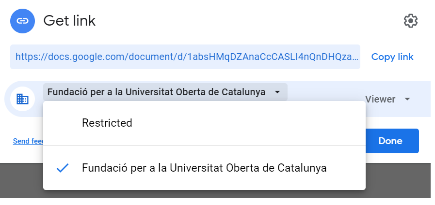
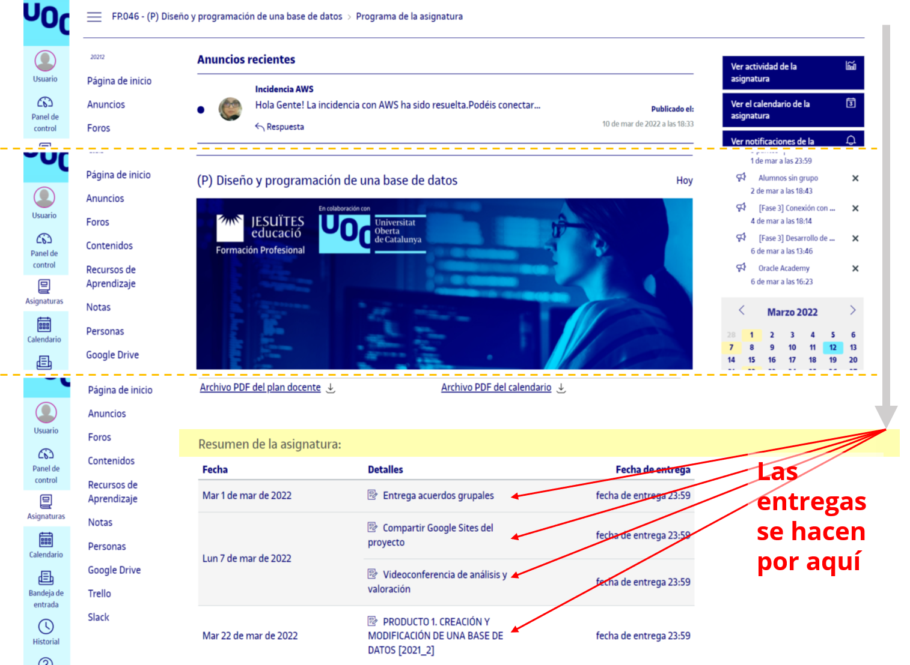

Ni por correo electrónico, ni compartiendo cosas conmigo, ni por ninguna otra vía.
Ni por correo electrónico, ni compartiendo cosas conmigo, ni por ninguna otra vía.En esta oportunidad os quiero hablar sobre la forma correcta de subir las entregas al aula.
Entiendo que el cambio de aula virtual ha causado cierta confusión.
Las entregas deben realizarse por los enlaces en Resumen de la asignatura: hacia el final de la Página de Inicio.
Ni por correo electrónico, ni compartiendo cosas conmigo, ni por ninguna otra vía.
De otra forma no puedo evaluar algo de lo cual no queda evidencia.
Tal como lo indica la entrega, el site deberá ser compartido para todos los de la Fundació per a la Universitat Oberta de Catalunya (no para el consultor/a).

Respecto del Trello debe ser público y enlazado o embebido en el site.
De esta forma, no habrá problemas de acceso en la Fase 4 por los compañeros de la convocatoria para realizar la evaluación entre pares, ni tampoco si hay en el futuro alguna auditoría sobre vuestras entregas en la UOC.
Os dejo la imagen de dónde están ubicados los enlaces para realizar las entregas

Por otra parte, el contenido completo de cada producto y fase lo podéis encontrar en el enlace Contenidos debajo de los enlaces para ver Anuncios y Foros en la Barra lateral izquierda.